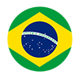

team usa
- 4 olympic games, silver medal beijing 2008
- 5 pan american game gold medals
- 8 world championships
- 4 fina world cup tournaments
- 12 world league super finals
- usa olympic captain since 2005

professional league

sesi 2013-present
Returns to his roots to help build the water polo program in Brazil. Leads team to the Brazilian league Finals and Brazilian Trophy for the first time in team history.

vk jug 2012-2013; 2008-2009
Helps team reach the European Championship Final Four both seasons. Leads team to gold medal in Croatian Championship in 2013.

fluminense 2011
Returns to his birthplace and leads team to the National Title as Brazilian champions.

jk primorac 2009-2011
Leading scorer in the Montenegrin league. Helps team reach European Championship Final in 2010.

can bissolati 2005-2007
First contract out of college, considered one of the best in the world. Becomes the leading scorer in the Italian league during his first season.

nyac 2008-present
Helps lead the team to six National Titles. Named Premier League Championship Offensive Player of the Tournament in May 2008.